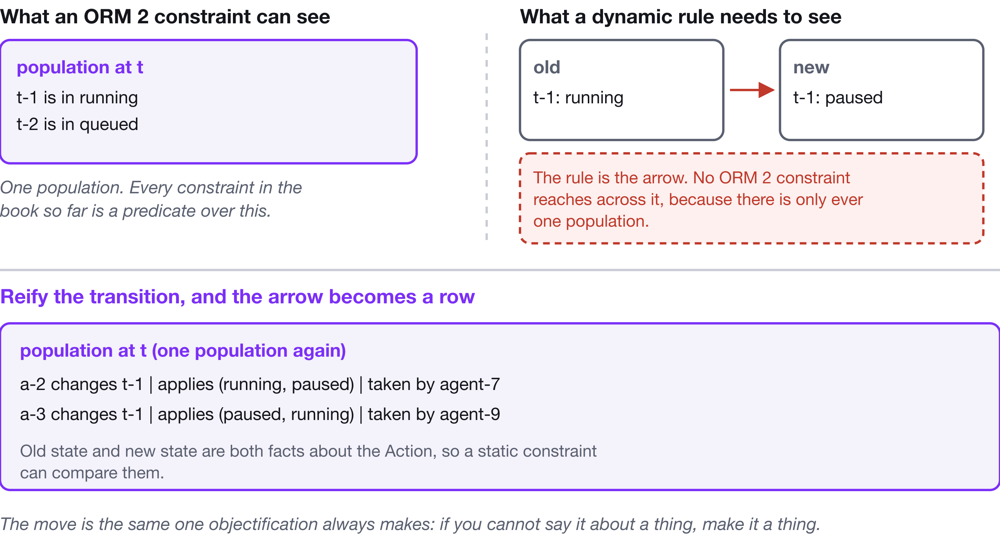
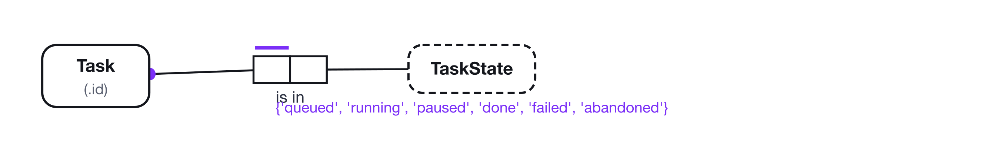
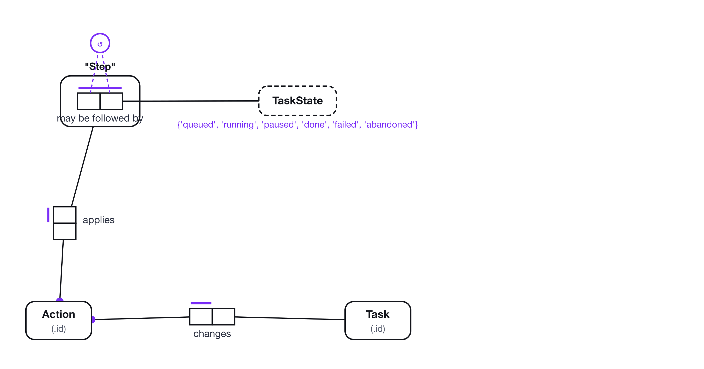
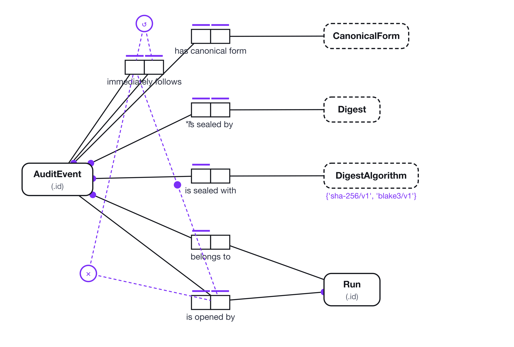
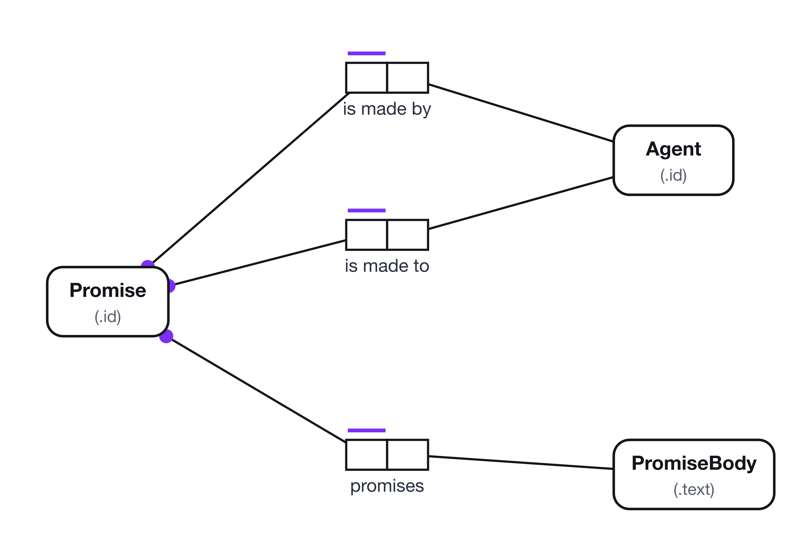
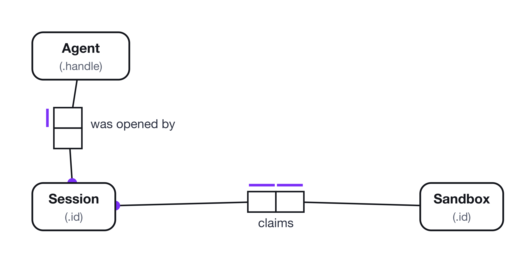
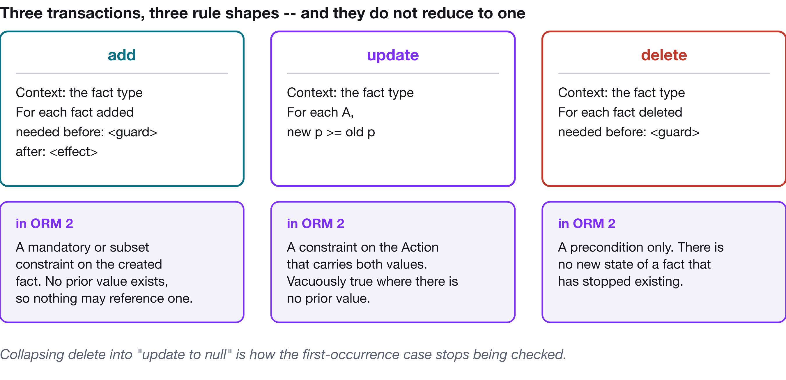
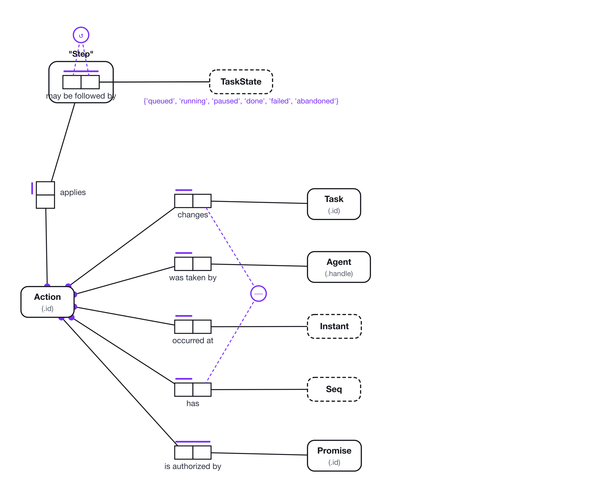
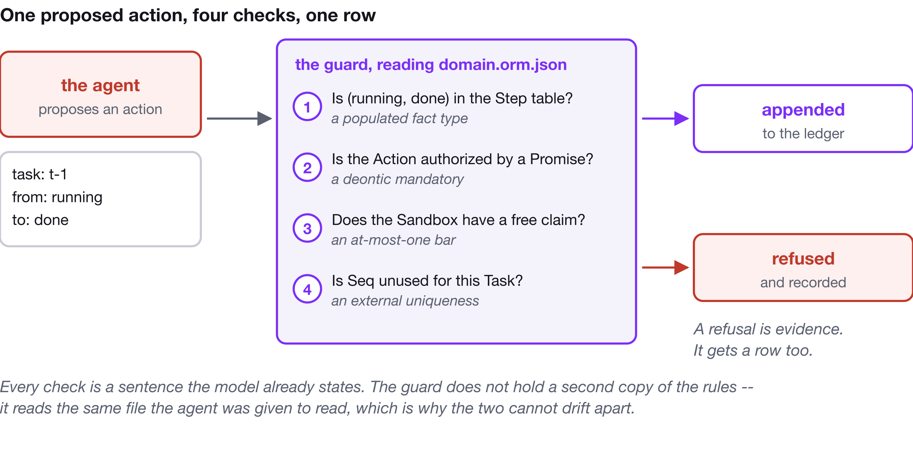

Actions and Rules for Agents in ORM 2
A little-cited paper on dynamic rules in Object-Role Modeling turns out to be an action-schema language for agents. Here is what it got right, the one thing it left unfinished, and how to model agent actions today in a formalism a validator can actually check.
From state-transition constraints to multi-agent causal graphs — a close reading of Balsters, Carver, Halpin & Morgan's "Modeling Dynamic Rules in ORM," and what it offers people building agentic systems on causal temporal event graphs, promise theory, and verifiable trust infrastructure.
1. Why an obscure ORM paper matters to agent builders
Object-Role Modeling is usually filed under "conceptual data modeling" — a fact-oriented alternative to ER and UML class diagrams, valued for producing constraint diagrams a domain expert can actually read. Balsters, Carver, Halpin and Morgan's paper on dynamic rules is a narrower, less-cited contribution: it extends ORM's static constraint language — facts about a single state — into a declarative language for state transitions, with old state, new state, and a relationship between them.
At first glance this is database-schema housekeeping. Don't let a salary decrease. Don't let a marital status jump from single straight to divorced. Don't let a seating claim a table that isn't vacant.
Squint at the structure and it is something else entirely: an action schema.
Context / needed before / after is STRIPS's precondition / effect
wearing different clothes. The old/new pair is a state-transition edge. The
case-statement transition tables in Figures 3 and 4 are finite-state-machine
transition matrices, written in a syntax aimed at a non-technical reader instead
of a planner.
That's the interesting part. The language was built for business analysts
validating rules about payroll and restaurant seatings, and it independently
arrived at a representation that overlaps heavily with the action-and-effect
languages used in classical planning, with event-condition-action rules in active
databases, and — closer to home if you work on Semantic Spacetime and causal
temporal event graphs — with the LEADS_TO edge that links a state-node to
its causal successor.
This piece works through the patterns one at a time, translates each into agent vocabulary, and then does the thing the paper could not: shows how to express each one in a model file a validator will check today, because the paper's own notation was never implemented anywhere.
2. The core pattern: context, precondition, and the old/new pair
The simplest example is the salary rule:
Context: Employee
For each Employee,
new salary >= old salary
Generalized, any functional binary fact type A R's B with role p gets:
Context: A | For each A,
new p <op> old p
where <op> is whatever comparison the domain needs. Three things in there map onto three different pieces of agent-action machinery.
(a) The context is a fact type, not a class. This is the paper's real
methodological insight, and it makes it explicit in Section 4 by comparing
against OCL. OCL forces every constraint's context to be an object or class,
which produces artificial side effects the moment a transaction naturally spans
two of them — their Seating occupies Table example, Figures 8 through 11. ORM
lets the fact type itself — the relationship, not either participant — be the
unit of transition.
That is exactly the difference between an object-oriented action model (a method call on one object that mutates a neighbour as a side effect) and a relational action model, where an action is a first-class edge connecting several participants. If you have been thinking of agent actions as verbs owned by a single agent object, the fact-type context is the nudge toward an action as a hyperedge that several parties co-author — which is how a causal temporal event graph, or a promise-theoretic promise/imposition pair, actually needs to be represented.
(b) old/new denotes a rule-scoped, single-step transaction. The paper is
disciplined about scope: application of dynamic rules is restricted to
"single-step transactions." No constraint spanning arbitrary numbers of states —
one edge, old to new. That restriction is precisely what makes the rules
checkable like SQL check-clauses rather than requiring general temporal logic. It
is the same choice STRIPS makes with effects axioms, and the same choice a CTEG
makes at the level of a single LEADS_TO edge: each edge is a local, checkable
step, and global properties — safety, liveness, "paid within 30 days" — are built
by composing edges rather than by writing one omniscient constraint over the
whole timeline.
(c) An undefined old value doesn't violate the rule; it makes it vacuously
true. If the employee had no prior salary, the inequality evaluates to unknown,
and unknown is not a violation. Small decision, large consequence: first
occurrences need a different rule from updates, and the paper says so
explicitly. Any framework that collapses "create" and "update" into one mutation
event will get this wrong, and it will get it wrong silently — the precondition
for creating a fact is a different rule from the precondition for updating one,
and pretending otherwise produces null-shaped bugs in the constraint layer rather
than in the code, which is where nobody looks.
3. The unfinished part: the notation was never implemented
Here is the thing you find out when you try to use any of this.
The dynamic-rule extension was a proposal. NORMA never implemented it; neither
has anything since. There is no validator that reads needed before, no
verbalizer that emits it, no serialization that carries it. A rule expressed in a
notation no tool can check is a comment — and a comment about a state transition
is exactly the artifact that goes stale first, because it is the artifact that
never fails a build.
So the practical question isn't how do I write old and new. It's:
What do I have to make into an object type so that old and new are both
facts about it?

A static constraint is a predicate over one population. A dynamic rule is a predicate over a pair. Reify the transition — make the change itself a thing in the model — and old state and new state become two roles on one object type, in one population, where an ordinary static constraint can compare them.
This is not a workaround. It's the same move ORM already makes for facts about facts, and it is the move a CTEG makes when it turns an event into a node. If you cannot say it about a thing, make it a thing.
4. Enumerated transitions: the FSM hiding in the fact type
Section 2 of the paper generalizes the salary rule to non-ordered domains via a case statement:
Context: A
in case old p =
'B1': new p in (B2, B3, ...)
...
end cases
That's a transition table. The marital-status matrix — single to married, married to widowed or divorced — is a finite-state-machine transition relation in role-based syntax rather than a state diagram.
Here's how the same thing looks when you reify it. Start with what most people model, which is the state and nothing else:

It is necessary that the possible values of TaskState are
{'queued', 'running', 'paused', 'done', 'failed', 'abandoned'}.
Each Task is in exactly one TaskState.
Correct, and useless for the question an agent asks. It permits queued and it
permits done, so it permits an agent to write done over queued and skip the
work. The value constraint enumerates the states. Nothing enumerates the
steps.
Now reify:

Each Step objectifies exactly one "TaskState may be followed by TaskState" fact.
In each population of "TaskState may be followed by TaskState",
each TaskState, TaskState combination occurs at most once.
It is necessary that no TaskState is related to itself in
"TaskState may be followed by TaskState".
Each Action applies exactly one Step.
Each Action changes exactly one Task.
TaskState may be followed by TaskState is a fact type whose population is the
transition table. Step objectifies it, so a step is a referenceable thing.
Action applies exactly one Step says an action must name one of the steps that
exists.
An illegal transition is not rejected by a rule. It is unrepresentable, because
there is no Step for it to apply.
The model, as code
This is an ORM 2 model file — the format Factum's editor, validator and CLI read. Populations live in the model beside the constraints, which is what makes the transition table part of the schema rather than a fixture:
{
"objectTypes": [
{ "id": "state", "name": "TaskState", "kind": "value", "dataType": "string" },
{ "id": "step", "name": "Step", "kind": "entity", "objectifiedFactTypeId": "mayFollow" },
{ "id": "action", "name": "Action", "kind": "entity", "refMode": "id" },
{ "id": "task", "name": "Task", "kind": "entity", "refMode": "id" }
],
"factTypes": [
{
"id": "mayFollow",
"roles": [
{ "id": "mayFollow.r0", "objectTypeId": "state" },
{ "id": "mayFollow.r1", "objectTypeId": "state" }
],
"readings": [
{ "id": "mayFollow.rd", "roleOrder": ["mayFollow.r0", "mayFollow.r1"],
"text": "{0} may be followed by {1}", "isPrimary": true }
],
"meta": {
"description": "The lifecycle rule, held as data. A step absent from this population is not a step an Action can apply, because there is no Step to apply."
},
"population": [
{ "values": ["queued", "running"] },
{ "values": ["running", "paused"] },
{ "values": ["paused", "running"] },
{ "values": ["running", "done"] },
{ "values": ["running", "failed"] },
{ "values": ["failed", "queued"] },
{ "values": ["queued", "abandoned"] },
{ "values": ["paused", "abandoned"] }
]
},
{
"id": "applies",
"roles": [
{ "id": "applies.r0", "objectTypeId": "action" },
{ "id": "applies.r1", "objectTypeId": "step" }
],
"readings": [
{ "id": "applies.rd", "roleOrder": ["applies.r0", "applies.r1"],
"text": "{0} applies {1}", "isPrimary": true }
]
}
],
"constraints": [
{ "id": "u-mayfollow", "kind": "uniqueness",
"roles": ["mayFollow.r0", "mayFollow.r1"] },
{ "id": "ring-step", "kind": "ring",
"roles": ["mayFollow.r0", "mayFollow.r1"], "types": ["irreflexive"] },
{ "id": "u-applies", "kind": "uniqueness", "roles": ["applies.r0"] },
{ "id": "m-applies", "kind": "mandatory", "roles": ["applies.r0"] },
{ "id": "vc-state", "kind": "value", "objectTypeId": "state",
"ranges": [
{ "value": "queued" }, { "value": "running" }, { "value": "paused" },
{ "value": "done" }, { "value": "failed" }, { "value": "abandoned" }
] }
]
}
The irreflexive ring is worth a sentence. no TaskState is related to itself
forbids a step from a state to the same state — the schema-level way of saying
a no-op is not an action. If your domain has meaningful self-steps, a retry
that stays running, drop the ring and say so. The point is that the decision is
now written down rather than being whatever the code happened to do.
And the transition table comes back out as English:
$ factum verbalize task-lifecycle.orm.json --population
## Sample population
- queued may be followed by running
- running may be followed by paused
- paused may be followed by running
- running may be followed by done
- running may be followed by failed
- failed may be followed by queued
- queued may be followed by abandoned
- paused may be followed by abandoned
That is the finite-state machine, in eight lines a domain expert can approve and an agent can read, in the same file as the rest of the domain. Not a state chart in a wiki that stopped matching the code in March.
The trade you are making
Holding the lifecycle as a population rather than as a constraint means the
validator checks that every referenced step exists, not that the set of steps
is right. Nothing stops a migration from adding queued may be followed by done.
For an agentic system that's the correct trade, because lifecycles change — and a
lifecycle held as data changes with a reviewable diff (factum diff before.orm.json after.orm.json) rather than with a schema migration and a deploy. If yours
genuinely never changes, promote the table to a value constraint on a StepCode
value type and take the stronger check. Most don't.
5. Historical facts, and who guarantees the ordering
The salary rule above assumes a snapshot: one current value, overwritten on update. Once you retain history — append rather than overwrite — the rule shape changes:
Context: Employee
For each salary added
if before:
Employee was awarded some salary on some Date
then after:
salary >= previous salary
Note the substitution. new/old become if before / then after, and a
previous function replaces direct reference to old p, because in an
append-only history there is no single old value — there is a most recent one,
selected by an ordering. The paper generalizes this over (A, p, B, Tag), where
Tag is "some value that consistently increases for a given A as new facts are
added": dates, incident numbers, version numbers, anything totally ordered.
That is a description of an append-only event log with a monotonic sequence
key, and the rule is a constraint on consecutive events in that log for a given
subject. If you build agentic memory — event-sourced world models, CTEGs, audit
trails for multi-agent decisions — this is the generalization to reach for. Don't
force "did the value change legally" into a mutable-snapshot rule when the
representation is a growing history. Ask instead whether the new event's p is a
legal successor of the most recent prior event's p, ordered by the Tag.
That reframing is what lets a CTEG's LEADS_TO edges carry the same legality
constraint the paper puts on a salary update without re-checking the whole graph
for every new event. Each new edge is checked against its immediate predecessor
along that subject's causal chain — the paper's single-step restriction, arrived
at from the other direction.
Now the part that does not port for free. The paper assumes the Tag history is
complete for each subject and that you never add a fact earlier than an existing
one. A single centralized database enforces that trivially. A multi-agent system
does not. Distributed agents proposing facts about one subject at overlapping
wall-clock times need a consensus-ordered log, a logical clock, or a
trust-anchored sequencing mechanism — which is the job KERI's key event logs and
ACDC chains do for identity and credential state, where each event references its
prior event's digest and previous becomes cryptographically, not merely
logically, well-defined.

Porting the historical-fact pattern into a multi-agent setting without also porting some version of that guarantee is the single most common way these rules quietly stop meaning what they say.
In the model, the guarantee is one external uniqueness constraint:
It is necessary that each combination of Task and Seq refers to at most one Action.
That sentence is what makes the previous action on this task well-defined: a
Seq is used at most once per task, so actions on a task are totally ordered and
previous means Seq - 1. It says nothing about who assigns the numbers. What
it does is make the requirement visible, so an implementation without one fails a
check instead of failing a post-mortem.
6. Non-functional fact types: actions with two owners
Section 4's seating example is the paper's best argument against object-oriented action modelling, and the clearest bridge to promise theory.
Context: Seating occupies Table
For each fact added
needed before: the table is vacant
after: the table is not vacant
The authors then spend two pages (Figures 9–11) making one point: there is no
single object whose method could carry this precondition without a side effect on
the other participant. Seating.addTable(t) mutates t, which is not the
seating's to mutate. Table.allocateSeating(s) mutates s's table property as a
side effect of a Table method. Their resolution is to introduce an artificial
class purely to satisfy OCL's class-centric context requirement — and they call it
"roundabout and artificial," correctly.
That failure mode is what promise theory was built to name. An agent can make voluntary claims about its own state and never impose obligations on another autonomous agent's state as a side effect of its own action. The table's vacancy is not the seating's to promise; the seating's table-assignment is not the table's to promise.

What ORM's fact-type context gets right — treating Seating occupies Table as a
first-class relationship distinct from either participant — is structurally the
move promise theory makes when it insists a joint fact requires both parties
to have made compatible promises: the seating promises to accept assignment to a
vacant table, the table promises to accept a seating only while vacant, and the
fact occupies exists only where those two are simultaneously honoured. The
dynamic rule is the effect condition on that joint promise. It just doesn't name
the promise structure underneath, because ORM's audience never needed the word
"agent."
And then something better happens
Write the joint action down as a relationship and most of the precondition evaporates.

Each Session claims exactly one Sandbox.
Each Sandbox is claimed by at most one Session.
Each Session was opened by exactly one Agent.
The sandbox is free is not an extra rule. It is the reading of the uniqueness
bar on the sandbox role, evaluated against the current population: a sandbox is
free exactly when it plays no role in claims. The dynamic rule's needed before
and after clauses were both restating one static invariant — and the invariant
is the better thing to write down, because it holds at every instant rather than
only at the moment of the write.
Which generalizes into a rule of thumb worth more than the rest of this section:
Before writing a precondition, look for the invariant it protects. Most preconditions on shared resources are an at-most-one bar nobody drew. The ones that survive the search are the genuinely temporal rules — monotonicity, ordering, budgets over a window — and those are what the reified action is for.
7. Two participants, one atomic effect
Section 5's banking example combines everything: a functional 1:1 update rule for account balances, a case statement branching on transaction type, and a genuinely two-account joint action.
Context: TransferTransaction
For each instance added
balance1 = (old account1.balance - amount) and
balance2 = (old account2.balance + amount) and
new account1.balance = balance1 and
new account2.balance = balance2
One dynamic rule, whose context is a subtype of a fact type, whose effect touches two independent accounts atomically. Read as an agent-action schema it is a two-phase-commit effect: meaningful only if both balances update together, with no legal intermediate state.
The declarative framing sidesteps locking and commit protocols — the paper notes that each transaction is "always considered to be isolated (serializable)" and, for the seating example, that "an appropriate locking mechanism is assumed." That is honest about where the scope ends. It specifies what must be true of the before/after pair, not how a distributed system guarantees that pair is observed atomically by everyone. The second question is where CTEGs, promise-based coordination and consensus-ordered logs pick up the work the paper deliberately leaves undone.
8. Deletion, and the rule that only needs a before
Section 6's payment-retention rule is the odd one out, and useful because it is minimal:
Context: MoneyAmount is paid to Company on Date
For each fact deleted
needed before: the date < today - 2 years
No after clause. Deletion rules only need a precondition, because there's no
new state of a fact that no longer exists.

The three elementary transaction types have structurally different rule shapes, and a general agent-action language needs all three natively rather than pretending delete is "update to null" and add is "update from null."
| Transaction | Rule shape | What it becomes when you reify |
|---|---|---|
| add | needed before guard, after effect | A mandatory or subset constraint on the created fact. There is no prior value, so the rule may not mention one |
| update | new p compared with old p | A constraint on the Action, which carries both values as roles |
| delete | needed before guard only | A precondition with no effect clause |
The one that bites is add, for the reason in section 2(c). A system that models creation as "update from null" inherits the hole silently: the guard finds no prior state, evaluates to something falsy or something vacuous depending on the language, and either refuses every first write or permits every first write. Both bugs are common. Neither produces an error message.
9. A template for agent action rules
Pulling it together, the patterns suggest a compact template — more declarative than STRIPS/PDDL, more checkable than free-text ECA rules:
Context: <fact type / joint relation the action operates on>
Transaction: added | updated | deleted
Precondition: needed before: <condition on current state, or on the most
recent prior event via `previous`, for append-only history>
Effect: after: <condition on new state, possibly relating it to the
old state, or via a case/transition table>
Four design decisions, each easy to get wrong when translating into a multi-agent or LLM-agent setting:
- Scope each rule to a single-step transition. Resist writing one rule that
reasons over an unbounded history; compose single-step rules the way a CTEG
composes
LEADS_TOedges, and let global properties emerge from composition. - Let the context be a fact type, not necessarily a single agent or object, whenever the precondition or effect genuinely spans more than one party. If you cannot state the rule without an artificial coordinating class, you have found a joint action — model it as a hyperedge or a pair of compatible promises.
- Give create, update and delete distinct rule shapes. Collapsing them loses the "first occurrence is vacuously legal" behaviour that update rules need.
- When history is retained, replace
oldwith aprevious-of-the-ordering-key function, and name who guarantees the ordering. In one database the DBMS does it for free. In a multi-agent system something else has to — a consensus log, a logical clock, a KERI-style hash chain — and the rule is only as trustworthy as that guarantee.
10. Doing it: modelling agent actions with Factum
Everything above is representable in plain ORM 2 today, which means it is representable in a file a tool checks. This section is the concrete version.
Factum is an ORM 2 editor, validator, verbalizer
and MCP server. The model is one .orm.json file; the toolchain reads it four
ways.
The whole action ledger

$ factum validate action-ledger.orm.json
No problems found. 28 sample fact(s).
Each Action applies exactly one Step.
Each Action changes exactly one Task.
Each Action was taken by exactly one Agent.
Each Action occurred at exactly one Instant.
Each Action has exactly one Seq.
In each population of "Action is authorized by Promise",
each Action, Promise combination occurs at most once.
It is obligatory that each Action is authorized by some Promise.
It is necessary that each combination of Task and Seq refers to at most one Action.
Six facts about one action, and each answers a question that gets asked in a post-mortem.
applies exactly one Step — what changed, and that the change was one the
lifecycle permits.
was taken by exactly one Agent — mandatory, because an action with no actor is
the modelling error that makes accountability impossible. Same decision the
promise graph makes when it refuses a promise without a promiser.
is authorized by Promise is deontic — It is obligatory that, not It is necessary that. An unauthorized action is a thing that happens: an agent exceeds
its remit, a token is stale, a human overrides. The whole value of a ledger is
that it can record one. Making the constraint alethic wouldn't prevent the act, it
would prevent the row, and the evidence would move to wherever the write went
instead. The test: if this is violated, should the write fail, or should there be
a record of the violation?
That distinction — necessity versus obligation, on the same constraint syntax —
is native to ORM 2 and has no equivalent in SHACL's sh:severity, which changes
how loudly a validator complains rather than what kind of rule it is.
Four ways the same file gets used
1. As the agent's prompt. factum verbalize turns the model into FORML
sentences — controlled English, complete, and small enough for a context window:
$ factum verbalize action-ledger.orm.json > .agent/domain.md
The agent no longer infers the lifecycle from status strings in the codebase. It reads eight sentences that state it.
2. As CI. factum validate --strict --exit-code fails a build when the model
is inconsistent. Because the transition table lives in the model's population,
a pull request that adds queued may be followed by done shows up as a diff a
reviewer reads in English, not as a constant buried in a service.
3. As the graph schema. factum graph maps the conceptual model to property
graph DDL, and objectification maps the way you want it to:
// Objectified fact type "TaskState may be followed by TaskState" (Step)
CREATE NODE TABLE Step(
id SERIAL PRIMARY KEY // Generated key for the reified fact
);
// Links each reified fact to its TaskState role player
CREATE REL TABLE HAS_TASK_STATE(FROM Step TO TaskState, MANY_ONE);
// Fact type "Action applies Step"
CREATE REL TABLE APPLIES(FROM Action TO Step, MANY_ONE);
The reified transition becomes a node with edges to both states — which is exactly the CTEG shape, derived from the conceptual model rather than hand-drawn.
4. As the guard. This is the payoff.

Every check in that diagram is a constraint quoted from earlier in this article,
and none of them is written twice. That's the property worth protecting: the
sentence the agent reads when it plans and the predicate the guard evaluates when
it writes come from one file, so they cannot drift apart. An agent told "tasks
go queued, running, done" in a system prompt and guarded by a hand-written if
has two copies of a rule, and every interesting failure lives in the gap between
them.
Refusals are the evidence
A refused action is not a non-event. It is often the most informative row you
have — the same reason a promise graph keeps rejected in its status list.
a-7 changes t-4 applies (running, done) taken by agent-9 refused
a-8 changes t-4 applies (running, failed) taken by agent-9 applied
The agent tried to mark work complete, was refused by the lifecycle, and took the honest path. Drop the first row and you see a failure and have to guess.
Which is also why Outcome doesn't belong as a nullable field on Action. A
refused action never changed a task and never applied a step. Model the attempt
and the effect as different things — a Proposal that may become an Action — or
keep refusals in the audit log, which is designed for observations rather than
state changes. Merging them into one entity with a nullable outcome is the
wide-table mistake in new clothes.
What still doesn't fit
Being explicit about the boundary is what makes the rest trustworthy.
- Two-state comparisons over stored values.
new salary >= old salary, where salary is a snapshot onEmployeerather than a fact about aSalaryChange, isn't expressible. Reify the change; then both values are roles and the comparison is a derivation rule you write into the model'sderivationRulefield and check in your code. - Join constraints across a path. The previous action on this task must have
been taken by the same agent needs a join between two fact types. ORM 2 states
such things awkwardly and Factum doesn't check them; write the intent into
meta.descriptionso the agent reading the model still gets the rule. - Temporal windows. At most three actions per task per hour is a frequency constraint over a window, and neither ORM 2 nor Factum has windows. Enforce it in the guard.
None of that is a reason to skip the model. A model that states eight of ten rules and marks the other two unenforced beats a codebase that states none and implies all ten.
11. Where this connects to formal verification
The paper repeatedly emphasizes that its syntax is designed to be validated by non-technical domain experts, trading formal completeness for readability and explicitly declining to give a complete formal grammar. Reasonable for a business-rules audience. But if these patterns are going to gate real state transitions in a multi-agent system rather than be reviewed by a human analyst, each has a natural formalization worth pursuing:
- The single-step
old/newrule is a two-state Hoare triple:{P(old)} action {Q(old, new)}. - The enumerated case-statement pattern is a finite-state-machine transition relation — expressible as a SHACL shape over a property-graph encoding of allowed transitions, or as a small inductive type with one constructor per legal edge in a dependently-typed setting. Or, as above, as a populated fact type, which is the version a domain expert will actually read.
- The two-party joint-action pattern is naturally a conjunction of two promise-compatibility predicates rather than a single-context postcondition — which also gives you a place to hang an authorization check ("who is permitted to assert this promise") that a business-rule syntax has no need to express and a multi-agent trust system cannot do without.
None of this is a criticism of the paper; it did the job it set out to do for the audience it had. But read now, with agentic memory, causal temporal event graphs and verifiable multi-agent coordination as the working context, "Modeling Dynamic Rules in ORM" is less a niche extension to a modelling notation and more an early, independently-derived sketch of the action-schema and joint-promise structures agent frameworks are still formalizing.
The part it left unfinished — a notation a tool can check — turns out not to need a new notation at all. Reify the transition, and the language you already have is enough.
Checklist
Before you ship an action model:
- Is the transition a thing? If old and new state are not both roles on one object type, no static constraint can relate them.
- Is the lifecycle a population or a constraint? Either is defensible. Not deciding is not.
- Does every action have an actor, mandatory? Attribution is why the ledger exists.
- Did you look for the invariant before writing the precondition? Most resource preconditions are an at-most-one bar nobody drew.
- Is
previouswell defined, and by what? Name the mechanism — external uniqueness on a sequence, a hash chain, a consensus log. "The database" is not an answer in a multi-agent system. - Is authority deontic? If violating it should produce a record rather than a rejected write, it is obligatory, not necessary.
The models in this article ship with Fact-Based Agents, which covers ORM 2, FORML and Factum for agentic memory — including a chapter on actions and rules that works through the ledger above in full, and chapters on agentic memory, promise graphs and audit logs. Every diagram is rendered by Factum's own renderer from a model file you can open and take apart.
Source: H. Balsters, A. Carver, T. Halpin & T. Morgan, "Modeling Dynamic Rules in ORM."